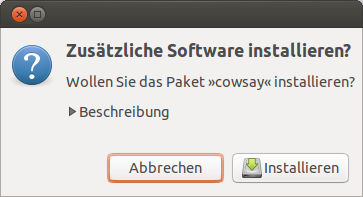
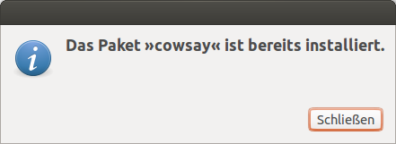
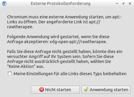

apturl
Hinweis:
Dieser Artikel wurde für die folgenden Ubuntu-Versionen getestet:
Ubuntu 16.04 Xenial Xerus
Ubuntu 14.04 Trusty Tahr
Zum Verständnis dieses Artikels sind folgende Seiten hilfreich:
apturl ist eine kleine Ergänzung für Firefox, Epiphany und apt-get, das die Installation von Paketen über die Adresszeile des Browsers bzw. durch einen simplen Linksklick  erlaubt. Mit einem kleinen manuellen Eingriff kann man apturl auch mit anderen Browsern nutzen.
erlaubt. Mit einem kleinen manuellen Eingriff kann man apturl auch mit anderen Browsern nutzen.
Neben dem Wiki von ubuntuusers.de verwenden auch andere Internetseiten wie z.B. das Ubuntu apps directory  dieses Programm zur bequemen Installation von Software.
dieses Programm zur bequemen Installation von Software.
| Ubuntu apps directory |
| Wiki Ubuntuusers.de |
Installation¶
Üblicherweise ist apturl in der Standardinstallation enthalten, kann aber auch – wie bei Xubuntu oder Lubuntu – fehlen. Es wird dann über den folgenden Befehl nachinstalliert [1]:
sudo apt-get install apturl
Nutzung¶
Mit dem Klick auf einen apturl-Link können keine neuen Softwarequellen eingebunden werden, sondern es können lediglich Pakete aus den bereits auf dem System aktivierten Quellen bzw. den unter /usr/share/app-install/channels registrierten s.g. "Channels" installiert werden. Dies sind in Ubuntu die Partnerquellen und die Extras-Quellen.
Lokales System¶
Die Nutzung von apturl ist sehr einfach. Man muss in die Adresszeile des Browser die folgende URL eintippen bzw. auf einen solchen Link klicken:
apt://PAKETNAME
und schon wird die Installation des entsprechenden Pakets angestoßen.
Gibt man z.B.
apt://cowsay
ein oder klickt auf solch einen Link, erscheint folgende Meldung:

in der man die Installation des Pakets mit einem Klick auf "Ok" bestätigt. Danach folgen die typischen Dialoge wie Passwortabfrage, Installationsfortschritt, usw.
Versucht man ein bereits installiertes Paket zu installieren, so erscheint folgende Fehlermeldung:

Möchte man mehrere Paket installieren, so müssen die Paketnamen durch ein Komma getrennt werden, also würde z.B.
apt://foo,bar
das Paket foo und anschließend das Paket bar installieren.
Weiterhin ist es möglich, zusätzlich die Paketquelle für apturl mit vorzugeben. Die folgende Zeile in der Adresszeile des Browsers:
apt+http://archive.canonical.com?package=acroread?dist=precise?section=partner
würde das Paket acroread speziell für Ubuntu 12.04 aus der Paketquelle Canonical Partner installieren.
apturl auf einer Homepage verwenden¶
apturl ist nicht nur auf das lokale System beschränkt, sondern kann auch auf HTML-Seiten wie ein normaler Link verwendet werden.
Dazu fügt man folgende Zeilen in eine beliebige HTML-Datei ein:
<a href="apt://cowsay">Hier klicken, um Cowsay zu installieren</a>
Klickt der Besucher der Internetseite auf den Link, so erscheint der oben beschrieben Dialog, um das Paket cowsay zu installieren. Selbstverständlich funktioniert dies nur, wenn auf dem entsprechenden Rechner auch apturl installiert ist.
Integration in andere Browser¶
Wie bereits oben erwähnt, bindet sich apturl bei der Installation automatisch nur in Firefox ein. Mit einigen wenigen Handgriffen lässt sich apturl aber auch mit dem Konqueror, Opera oder Chromium nutzen.
Firefox¶
In seltenen Fällen funktionieren apturl-Links nicht. Dann erhält man folgende Fehlermeldung:
"Firefox weiß nicht, wie diese Adresse geöffnet werden soll, da das Protokoll (apt) mit keinem Programm verknüpft ist."
Ab Version 22.0 hilft folgende Prozedur:
die Pseudo-Adresse
about:configaufrufen,einen neuen Boolean mit dem Namen
network.protocol-handler.expose.apterstellenund als Wert
falsesetzen.
Wenn man dann einen apturl-Link anklickt, wird man beim ersten Mal gefragt, welche Anwendung verwendet werden soll. Hierauf muss man sich zu /usr/bin/apturl durchklicken und dieses auswählen. Wenn man gleich den Haken setzt, dass dieses Protokoll immer damit geöffnet werden soll, erscheint dann im Firefox apt auch bei "Bearbeiten -> Einstellungen -> Anwendungen" mit dem ausgewählten Skript und könnte dort auch wieder geändert werden.
Konqueror¶
Um apturl in Kombination mit dem Konqueror zu nutzen, muss man zwei Dateien editieren.
Man öffnet /usr/share/kde4/services/apt.protocol mit einem Editor [2] mit Root-Rechten und fügt folgenden Inhalt ein:
[Protocol] exec=apturl "%u" protocol=apt input=none output=none helper=true reading=true writing=true
Die zweite Datei /usr/share/kde4/services/apt+http.protocol bekommt folgenden Inhalt:
[Protocol] exec=apturl "%u" protocol=apt+http input=none output=none helper=true reading=true writing=true
Sollte die Datei nicht vorhanden sein, so muss diese zuerst angelegt werden:
sudo touch /usr/share/services/apt+http.protocol
Opera¶
Um apturl in Kombination Opera zu nutzen, muss man das apt-Protokoll registrieren. Dies ist unter "Extras -> Einstellungen -> Erweitert -> Programme" möglich. Dort klickt man auf "Hinzufügen" und trägt als Protokoll apt ein. Als zugeordnetes Programm trägt man unter "Mit anderem Programm öffnen" /usr/bin/apturl ein.
Will man die Zuordnung gleich für alle Benutzer vornehmen, muss man die Datei /etc/opera6rc mit einem Editor mit Root-Rechten öffnen und folgende Zeilen hinzufügen:
[Trusted Protocols] apt=0,0,apturl apt+http=0,0,apturl
Chromium¶
Um apturl in Kombination mit Chromium auch bei mehreren zu installierenden Paketen nutzen zu können, muss die Datei /usr/share/pyshared/AptUrl/Parser.py in einem Editor mit Root-Rechten bearbeitet werden. Nach dem Abschnitt:
1 2 3 4 | def parse(full_url, mapping=apturl_substitution_mapping): " parse an apt url and return a list of AptUrl objects " # ?k11=v11?k12=v12,pkg2?k21=v21?k22=v22,... res = [] |
müssen die Zeilen
1 2 3 | #replace url encoded commas and trailing slashes full_url = full_url.replace('%2C', ',') full_url = full_url.rstrip('/') |
ergänzt werden, da Chromium z.B. aus apt://foo,bar den Link apt://foo%2Cbar/ macht.

Andere Anwendungen¶
Viele Anwendungen wie z.B. Zim nutzen zum Öffnen von Links die Funktion xdg-open. Ab Ubuntu 10.10 öffnet sich dann das Software-Center. Damit stattdessen das leichtgewichtigere apturl gestartet wird, genügt einmalig folgendes Kommando in einem Terminal:
xdg-mime default apturl.desktop x-scheme-handler/apt
Wer dieses Kommando wieder rückgängig machen will, kann die entsprechende Zeile aus der Datei ~/.local/share/applications/mimeapps.list wieder löschen.
 Übersichtsartikel
Übersichtsartikel- Erstellt mit Inyoka
-
 2004 – 2017 ubuntuusers.de • Einige Rechte vorbehalten
2004 – 2017 ubuntuusers.de • Einige Rechte vorbehalten
Lizenz • Kontakt • Datenschutz • Impressum • Serverstatus -
Serverhousing gespendet von